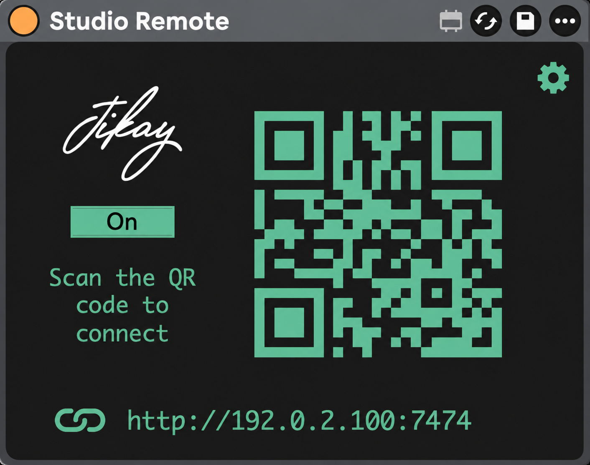
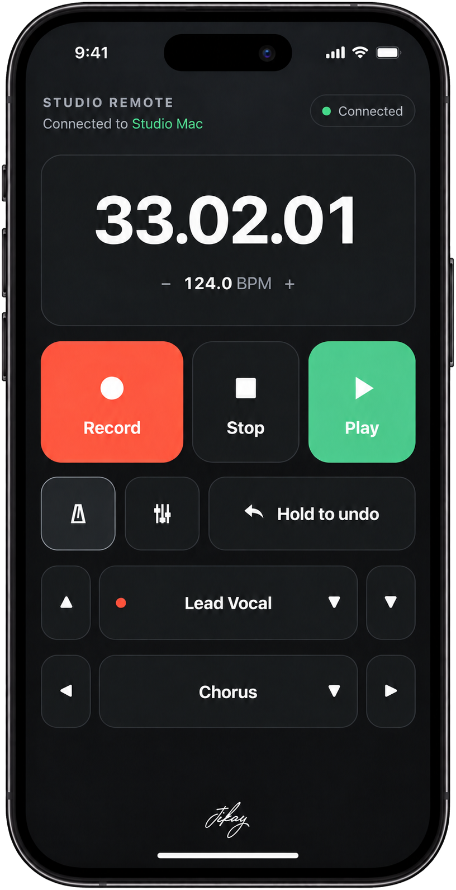

Keep recording.
Record, play, stop, set the tempo and metronome. Hold to Undo for another go.


Wireless control for Ableton Live
Stay at the Booth. Stay at your instrument. Keep recording.
Control Ableton Live from your phone, tablet or browser.
Page preview · purchase link to come
In the booth, behind the drums, or with a guitar in your hands. Keep your focus on the take.
Record, play, stop, set the tempo and metronome. Hold to Undo for another go.
Jump between tracks and Arrangement Markers. Auto Arm readies the track you select from the remote.
Open the mixer for volume, pan, mute, solo and arm. Everything stays in sync with Live.
No separate remote app. Just your browser.
Drop Studio Remote onto a track in Live and turn it on.
Join the same local network, then scan the device’s QR code.
Open the link in your browser. You’re ready to record.
Page preview · purchase link to come